เริ่มที่นี่: เข้าระบบ SE-WIL และกรอกข้อมูลที่ฝึก
ทำให้เสร็จภายในวันศุกร์ที่ 13 พฤศจิกายน 2569 ถ้าเตรียมข้อมูลจากผู้นิเทศงานครบ ใช้เวลาราว 20–30 นาที หน้านี้แสดงทุกขั้นพร้อมภาพหน้าจอ และสิ่งที่ต้องทำต่อจนจบการฝึก

ฉบับ 1.2 · ปรับปรุงล่าสุด 9 พฤศจิกายน 2569 · ประวัติการปรับปรุง
สัปดาห์นี้ต้องทำ 4 อย่าง
- คุยกับผู้นิเทศงานที่บริษัท ขอข้อมูลตามรายการด้านล่างทำก่อนเข้าระบบ เพราะแบบฟอร์มบังคับกรอกข้อมูลเหล่านี้
- เข้าระบบ SE-WIL กรอกข้อมูลที่ฝึก แล้วกด "ส่งให้หลักสูตรตรวจ"ภายในวันศุกร์ที่ 13 พฤศจิกายน 2569 ที่ rmutl.link/sewil
- พิมพ์หนังสือแนะนำและแบบตอบรับ (SE-WIL00) ให้ลงนาม แล้วแนบในระบบทุกคน แม้ฝึกที่เดิม ภายในวันจันทร์ที่ 16 พฤศจิกายน 2569 ดูวิธีด้านล่าง
- บอกผู้นิเทศงานให้รออีเมลข้อตกลง SE-WIL01 แล้วกดยืนยันภายในวันจันทร์ที่ 16 พฤศจิกายน 2569 อีเมลมาจาก "ระบบ SE-WIL" หลังหลักสูตรอนุมัติ
เตรียมข้อมูลก่อนเข้าระบบ
ต้องมี (ระบบบังคับ)
- ชื่อ ประเภท ที่อยู่ และจังหวัดของสถานประกอบการ
- ลิงก์ Google Maps ของบริษัท (เปิด Google Maps ค้นหาบริษัท กด "แชร์" แล้วคัดลอกลิงก์)
- ผู้นิเทศงาน: ชื่อ-นามสกุล ตำแหน่ง อีเมล
- ที่ปรึกษาร่วมของโครงงาน: คนเดียวกับผู้นิเทศงานหรือไม่ ถ้าไม่ใช่ ต้องมีชื่อ ตำแหน่ง อีเมล
- ชื่อตำแหน่งและลักษณะงาน 305
- โจทย์ปัญหาอย่างน้อย 1 หัวข้อพร้อมรายละเอียด ที่บริษัทรับรอง 304
- รูปแบบการทำงาน และตารางเวลา 305 อย่างน้อย 20 ชม./สัปดาห์ 304 อย่างน้อย 6 ชม./สัปดาห์
- ความเป็นเจ้าของผลงาน (ตกลงกับบริษัท) และค่าตอบแทน (ไม่มีให้พิมพ์ว่า ไม่มี)
- ถ้าไม่ได้ฝึกต่อที่เดิมจาก ENGSE301: เหตุผลที่เปลี่ยน
ไม่บังคับ
- เบอร์มือถือของคุณ (เว้นว่างได้ ติดต่อทางอีเมลแทน)
- CV เป็นไฟล์ PDF ไม่เกิน 5 MB
- เบอร์ผู้นิเทศงาน ใส่เมื่อท่านยินยอมเท่านั้น
- เบอร์กลางและเว็บไซต์ของบริษัท
- รูปหน้าอาคารหรือป้ายบริษัท ช่วยให้อาจารย์นิเทศหาสถานที่ได้ง่าย ไม่ควรมีหน้าคน
เบอร์โทรเห็นเฉพาะผู้เกี่ยวข้องกับการฝึกของคุณ อ่านการคุ้มครองข้อมูลส่วนบุคคล
แบบตอบรับ SE-WIL00 ที่สถานประกอบการลงนาม ทุกคนต้องมี แม้ฝึกที่เดิมจาก ENGSE301 เอกสารมี 2 หน้า หน้า 1 คือหนังสือแนะนำรายวิชาที่หัวหน้าหลักสูตรลงนาม หน้า 2 คือแบบตอบรับที่บริษัทลงนาม
- ยังไม่มีที่ฝึก หรือบริษัทยังไม่ให้ข้อมูล: พิมพ์ฉบับเปล่า ไปยื่นพร้อม CV บริษัทกรอกและลงนาม แล้วนำข้อมูลมากรอกในระบบ นักศึกษากลุ่มนี้ส่งข้อมูลในระบบได้ถึง 16 พ.ย. แจ้งผู้ประสานงานก่อน
- กรอกในระบบแล้ว (ที่เดิมหรือที่ใหม่): หลังกด "ส่งให้หลักสูตรตรวจ" กดปุ่ม เตรียมฉบับมีข้อมูลของฉัน ในหน้าแรกของระบบ แล้วพิมพ์ 2 หน้า บริษัทตรวจและลงนามอย่างเดียว ถ้าข้อมูลใดผิด ให้แก้ด้วยปากกาและลงนามกำกับ แล้วแจ้งผู้ประสานงาน
- ลายเซ็นหัวหน้าหลักสูตรในหน้า 1: นำไปให้ท่านลงนามเอง หรือรับฉบับที่ผู้ประสานงานพิมพ์และท่านลงนามไว้แล้ว
- เมื่อบริษัทลงนามแล้ว: สแกนหรือถ่ายรูปหน้า 2 ให้เห็นชัดทั้งหน้า แนบในช่อง "แบบตอบรับที่สถานประกอบการลงนามแล้ว" ในหน้าแรกของระบบ ภายใน 16 พ.ย. เก็บฉบับจริงไว้ส่งหลักสูตรเมื่อขอ
อีเมลผู้นิเทศงานต้องสะกดตรงกันทุกตัวอักษร ถ้าผู้นิเทศงานคนเดียวดูแลนักศึกษาหลายคน ทุกคนต้องกรอกอีเมลเดียวกัน ระบบจึงจะส่งลิงก์เดียวที่เห็นทุกคน ถ้าสะกดต่างกันแม้ตัวเดียว ท่านจะได้ลิงก์แยกและงงว่าทำไมเห็นไม่ครบ
ข้อความสำหรับส่งถามผู้นิเทศงาน คัดลอกไปส่งทางอีเมลหรือแชตของบริษัท แล้วแก้ชื่อให้ถูกต้อง
เข้าระบบ
เปิด rmutl.link/sewil แล้วขอลิงก์
กรอกอีเมลมหาวิทยาลัย @live.rmutl.ac.th แล้วกด "ส่งลิงก์เข้าระบบ" ไม่มีรหัสผ่าน ไม่ต้องสมัคร
ถ้าเห็นแถบสีเทาด้านบนว่า "This application was created by a Google Apps Script user" เป็นเรื่องปกติของระบบ
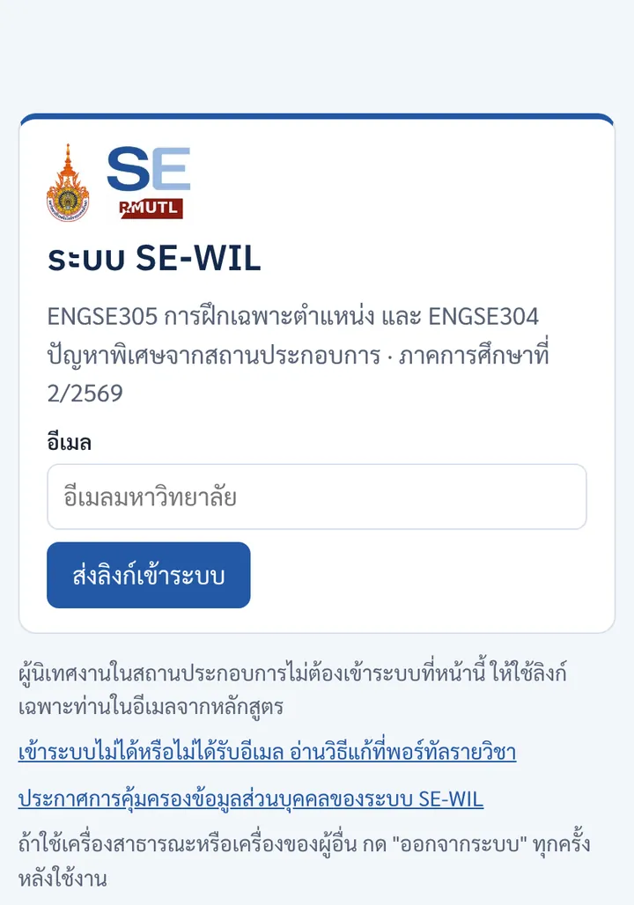
รอ 1–2 นาที
หน้าจอแสดงข้อความแบบนี้เสมอ ไม่ว่าอีเมลจะอยู่ในรายชื่อหรือไม่
ขอครั้งเดียวแล้วรอ ถ้าขอหลายครั้ง ให้ใช้ลิงก์ในอีเมลฉบับล่าสุด
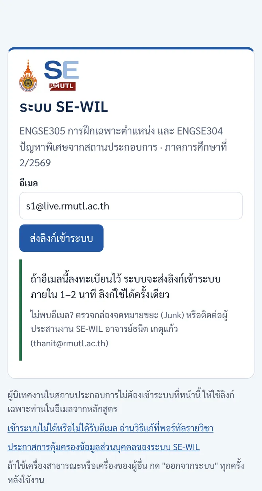
เปิดอีเมล "[SE-WIL] ลิงก์เข้าระบบ"
กดปุ่ม "เข้าระบบ SE-WIL" ภายใน 30 นาที ลิงก์ใช้ได้ครั้งเดียว
ไม่เจอในกล่องจดหมาย ให้ดูโฟลเดอร์ Junk หรือ Quarantine ของ Outlook ก่อน
เปิดลิงก์บนเครื่องที่จะใช้กรอก ระบบจำเครื่องนั้นไว้ 14 วัน
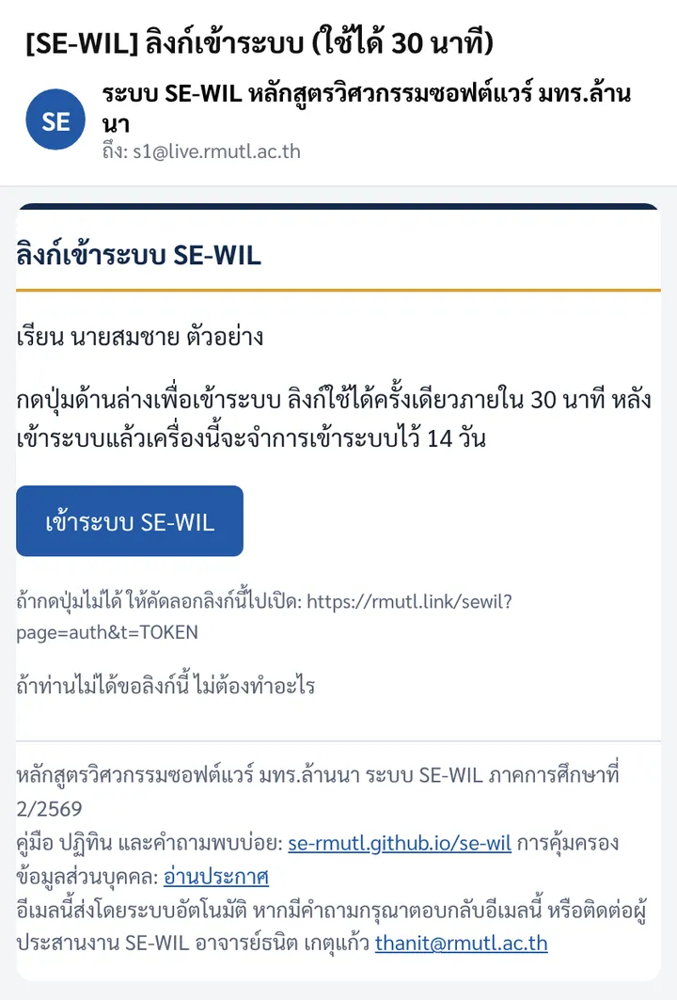
ดูการ์ด "สิ่งที่ต้องทำ"
หน้าแรกบอกงานค้างและกำหนดการถัดไปเสมอ กด "ไปที่รายการ" เพื่อเปิดแบบฟอร์ม
ชื่ออาจารย์นิเทศจะแสดงใต้ชื่อคุณเมื่อหลักสูตรจัดแล้ว
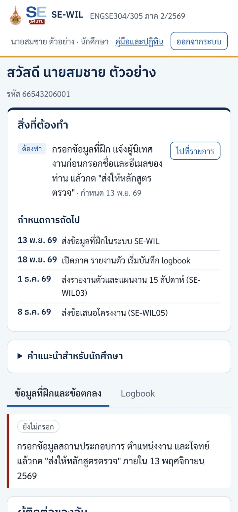
กรอกแบบฟอร์ม 8 ส่วน
ช่องที่มี * ต้องกรอก กด "บันทึกร่าง" ได้ทุกเมื่อ แล้วกลับมาทำต่อได้ แตะหัวข้อเพื่อดูภาพตัวอย่าง
ก. สถานประกอบการชื่อ ที่อยู่ Google Maps รูป ที่เดิมหรือไม่
- ลิงก์ Google Maps ใช้ลิงก์จากปุ่ม "แชร์" หรือพิกัด เช่น 18.7953, 98.9529
- รูปบริษัทแนบได้หลังกด "บันทึกร่าง" ครั้งแรก
- ส่วนใหญ่ตอบ "ใช่ ฝึกต่อที่เดิม" ถ้าเปลี่ยน ต้องเขียนเหตุผล
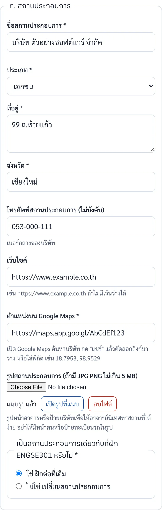
ข. ข้อมูลติดต่อของนักศึกษาเบอร์มือถือ CV
- เบอร์มือถือไม่บังคับ ถ้าเว้นว่าง ผู้เกี่ยวข้องจะติดต่อทางอีเมล
- CV เป็น PDF ไม่เกิน 5 MB ไม่บังคับ
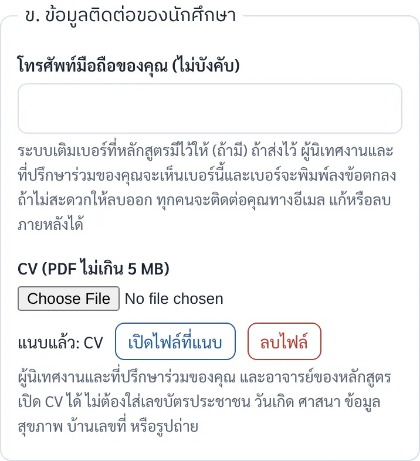
ค. ผู้นิเทศงาน (ENGSE305)ชื่อ ตำแหน่ง อีเมล
- ตรวจอีเมลให้ถูกต้อง ระบบส่งข้อตกลงและสรุป logbook ทุกศุกร์ไปที่อีเมลนี้
- ควรเป็นอีเมลที่ทำงานของท่าน
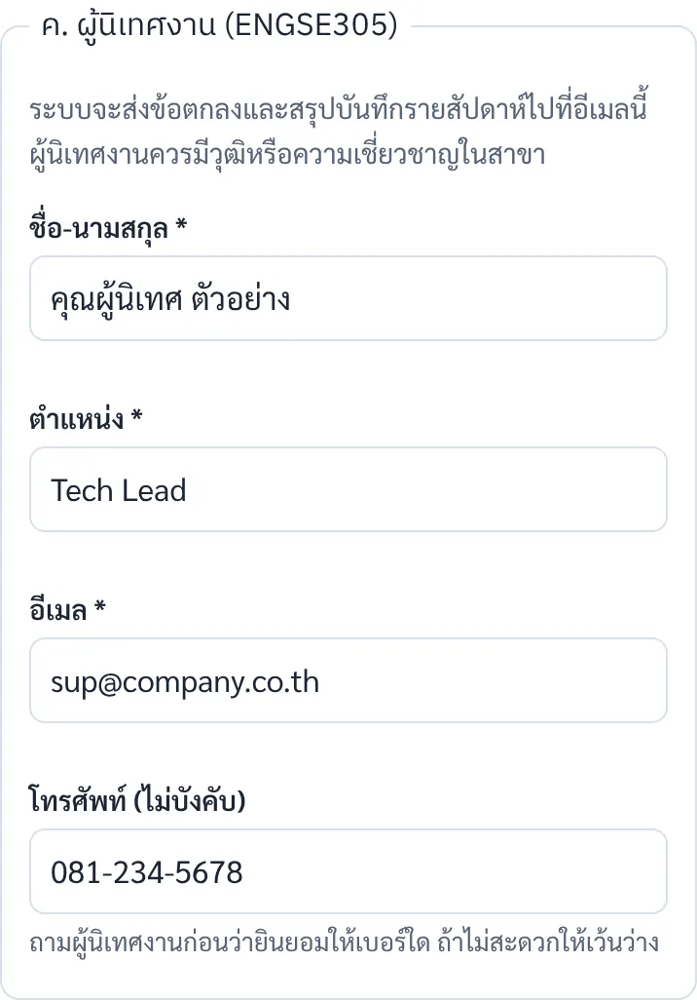
ง. ที่ปรึกษาร่วม (ENGSE304)คนเดียวกับผู้นิเทศงานหรือไม่
- ถ้าเป็นคนเดียวกัน เลือก "ใช่" แล้วข้ามได้
- ถ้าไม่ใช่ กรอกชื่อ ตำแหน่ง อีเมล
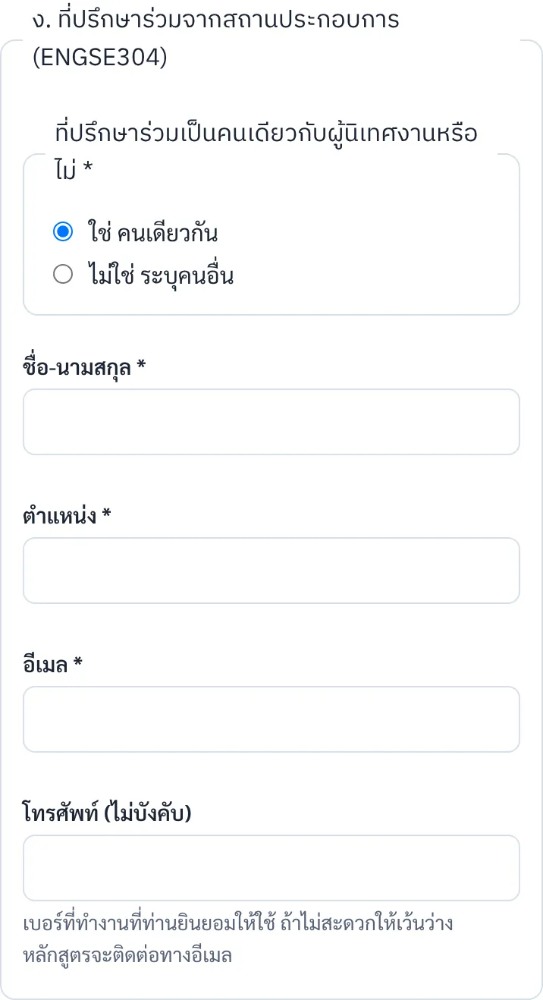
จ. ตำแหน่งงาน ENGSE305ชื่อตำแหน่ง ลักษณะงาน
- เขียนงานที่ได้รับมอบหมายจริง 3–5 บรรทัด
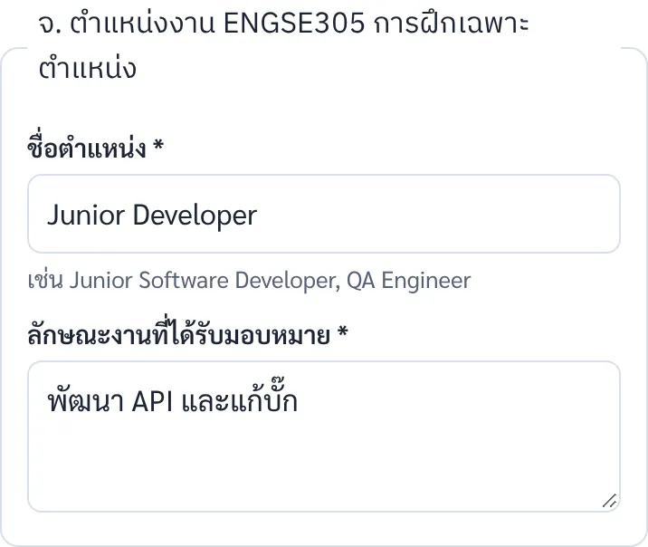
ฉ. โจทย์ปัญหา ENGSE3041–2 หัวข้อ
- ต้องเป็นปัญหาจริงที่บริษัทรับรอง
- ยังไม่ต้องละเอียดเท่าข้อเสนอโครงงาน ซึ่งส่งวันที่ 8 ธ.ค.
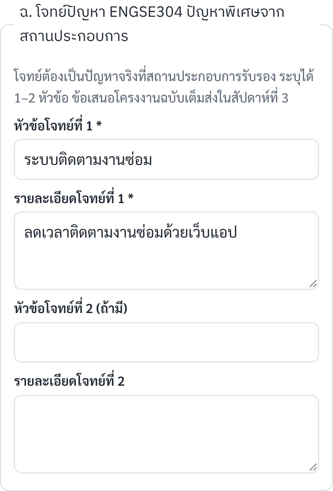
ช. รูปแบบการทำงานและตารางเวลาณ บริษัท แบบผสม ทางไกล
- ระบบเติมตารางตัวอย่างให้ แก้ให้ตรงกับที่ตกลงกับบริษัท
- 305 อย่างน้อย 20 ชม./สัปดาห์ 304 อย่างน้อย 6 ชม./สัปดาห์ ณ บริษัท
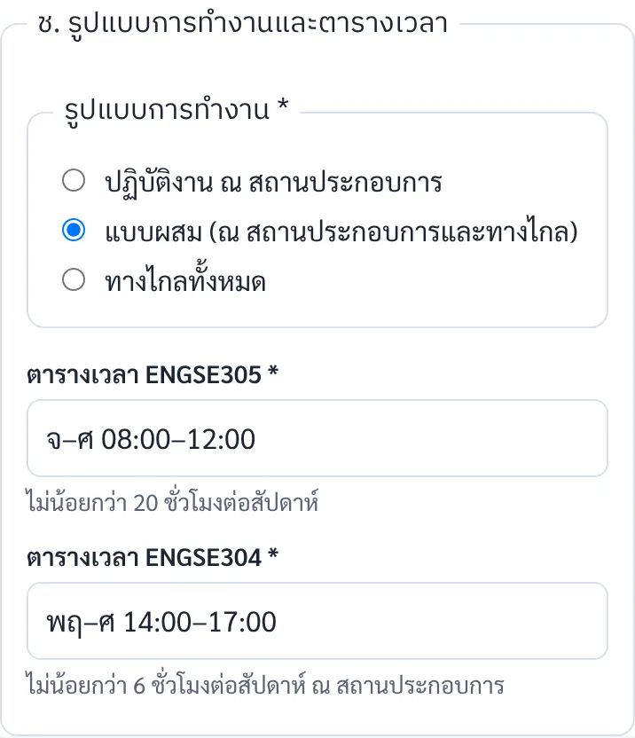
ซ. ข้อตกลงอื่นเจ้าของผลงาน ค่าตอบแทน
- เลือกตามที่ตกลงกับบริษัท ถ้าไม่แน่ใจให้ถามผู้นิเทศงานก่อน
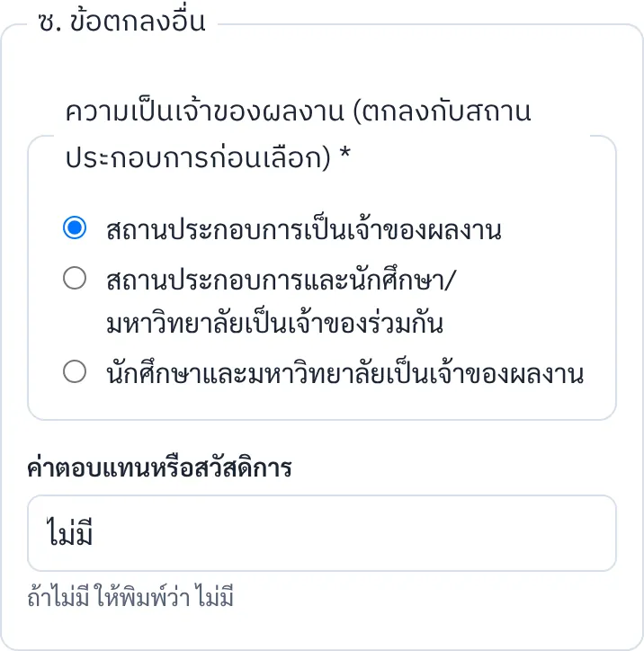
ติ๊กยินยอม แล้วกด "ส่งให้หลักสูตรตรวจ"
ถ้ามีช่องที่ขาด ระบบแสดงรายการเป็นตัวแดง กรอกให้ครบแล้วกดอีกครั้ง
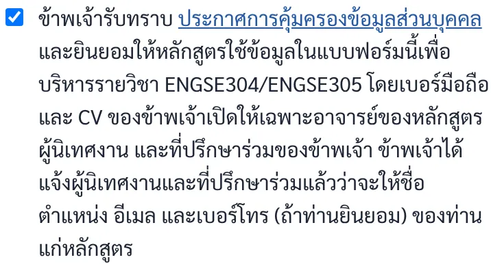
กด "ยืนยันส่ง"
ส่งแล้วแก้ไม่ได้จนกว่าอาจารย์จะส่งกลับ จึงควรตรวจอีเมลผู้นิเทศงานอีกครั้งก่อนยืนยัน
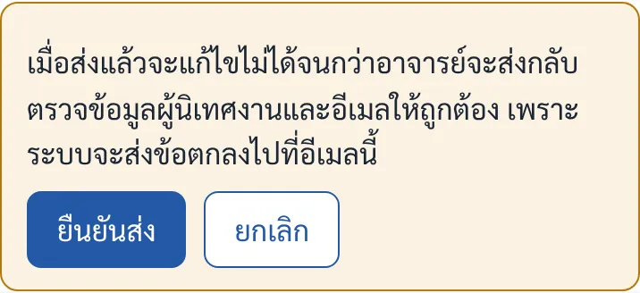
หลังกดส่ง: ดูสถานะที่หน้าแรก
- รอหลักสูตรตรวจ
อาจารย์ตรวจข้อมูลภายในวันเสาร์ที่ 14 พ.ย.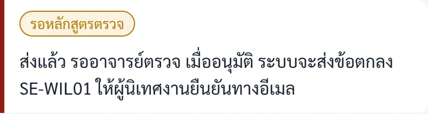
- ส่งกลับให้แก้ไข (ถ้ามี)
คุณได้อีเมลแจ้งเหตุผล แก้แล้วกดส่งอีกครั้ง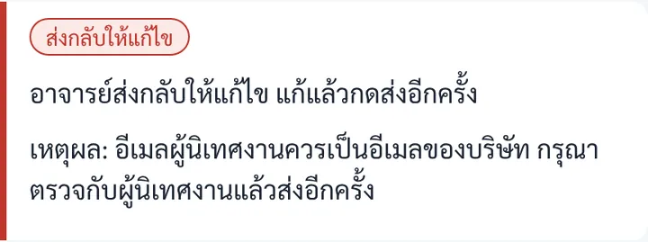
- พิมพ์แบบตอบรับฉบับมีข้อมูล
กด "เตรียมฉบับมีข้อมูลของฉัน" ในการ์ดหนังสือแนะนำและแบบตอบรับ ให้ลงนาม แล้วแนบไฟล์ในการ์ดเดียวกันไม่ต้องรอหลักสูตรอนุมัติ พิมพ์ได้ทันทีหลังกดส่ง
- รอสถานประกอบการยืนยัน
ผู้นิเทศงานได้อีเมลข้อตกลง คุณได้สำเนา ตามให้ท่านกดยืนยันภายใน 16 พ.ย.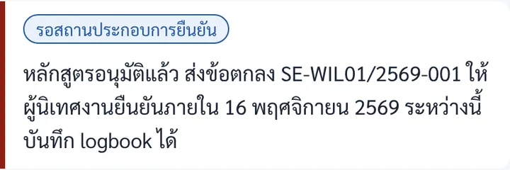
- ยืนยันแล้ว
ลงทะเบียน ENGSE304 และ ENGSE305 และเริ่มบันทึก logbook วันที่ 18 พ.ย.แท็บ Logbook เปิดให้บันทึกตั้งแต่ข้อตกลงถูกส่ง แต่ชั่วโมงเริ่มนับตั้งแต่วันเปิดภาค
ตลอดภาคจนจบการฝึก
ส่วนของระบบที่ยังไม่เปิด หลักสูตรจะแจ้งทาง LINE และอีเมลก่อนกำหนดอย่างน้อย 1 สัปดาห์ รายละเอียดแต่ละช่วงอยู่ในหน้าสิ่งที่ต้องทำ
| กำหนด | สิ่งที่ต้องทำ |
|---|---|
| 13 พ.ย. | ส่งข้อมูลที่ฝึก · ระบบ SE-WIL |
| 16 พ.ย. | ผู้นิเทศงานยืนยันข้อตกลง SE-WIL01 · อีเมลของผู้นิเทศงาน แนบแบบตอบรับ SE-WIL00 ที่บริษัทลงนาม · ระบบ SE-WIL |
| 18 พ.ย. | เปิดภาค ลงทะเบียน รายงานตัว เริ่ม logbook ทุกวันทำงาน · วิธีบันทึก |
| ทุกวันศุกร์ | ตรวจ logbook ก่อนบ่าย ระบบส่งให้ผู้นิเทศงานรับรอง แก้รายการที่ถูกส่งกลับ |
| 1 ธ.ค. | รายงานตัวและแผนงาน 15 สัปดาห์ (SE-WIL03) |
| 8 ธ.ค. | ส่งข้อเสนอโครงงาน (SE-WIL05) · โครงงาน ENGSE304 |
| 15 ธ.ค. | รับผลพิจารณาข้อเสนอโครงงาน |
| 16 ธ.ค.–5 ม.ค. | นิเทศครั้งที่ 1 และประชุมสามฝ่าย ส่งแฟ้มนักศึกษาล่วงหน้า 7 วัน |
| 12 ม.ค. | ประเมินกลางภาค และทบทวนความก้าวหน้าโครงงาน (SRS และการออกแบบ) |
| 26 ม.ค. | รายงานความก้าวหน้าโครงงาน (SE-WIL07) |
| 9 ก.พ. | วันสุดท้ายของการถอนรายวิชาโดยได้ W |
| 16 ก.พ. | ร่างรายงานโครงงานและรายงานการทดสอบ |
| 23 ก.พ. | ประเมินปลายภาค รายงานสะท้อนการเรียนรู้ (SE-WIL12) สาธิตผลงานต่อบริษัท |
| 2 มี.ค. | นำเสนอแฟ้มผลงาน สอบปากเปล่าและสาธิต ส่งรายงานฉบับสมบูรณ์ |
| 9 มี.ค. | ชั่วโมงที่รับรองแล้วครบ 300 (305) และ 135 (304) หลักสูตรส่งผล |
ปัญหาที่พบบ่อย
- ไม่ได้รับอีเมลลิงก์
- รอ 2 นาที ดู Junk และ Quarantine ของ Outlook ถ้ายังไม่มี อีเมลของคุณอาจยังไม่อยู่ในรายชื่อ แจ้งผู้ประสานงานพร้อมรหัสนักศึกษา
- กดลิงก์แล้วขึ้นว่าใช้ไม่ได้
- ลิงก์หมดอายุใน 30 นาทีหรือถูกใช้ไปแล้ว ขอลิงก์ใหม่ที่หน้าเข้าระบบ
- อยากแก้ข้อมูลหลังกดส่ง
- แจ้งผู้ประสานงานให้ส่งกลับ เบอร์มือถือของตนเองแก้หรือลบได้เองตลอดเวลา
- ผู้นิเทศงานไม่ได้รับอีเมลข้อตกลง
- ตรวจอีเมลที่กรอก ให้ท่านดูโฟลเดอร์ขยะ แล้วแจ้งผู้ประสานงานเพื่อส่งซ้ำ ผู้นิเทศงานลงนามในเอกสารแทนได้
- ฝึกที่เดิม ต้องมีแบบตอบรับไหม
- ต้องมี เป็นหลักฐานการตอบรับอย่างเป็นทางการของภาคนี้ ใช้ฉบับมีข้อมูลที่พิมพ์จากระบบ บริษัทลงนามอย่างเดียว
- เปลี่ยนสถานประกอบการจาก ENGSE301
- ตอบ "ไม่ใช่" ในส่วน ก และเขียนเหตุผล ก่อนเปิดภาคไม่ต้องใช้แบบ SE-WIL02
- ใช้มือถือได้ไหม
- ได้ แต่ช่องข้อความยาว เช่น ลักษณะงานและโจทย์ กรอกบนคอมพิวเตอร์สะดวกกว่า ใช้เครื่องสาธารณะให้กด "ออกจากระบบ" ทุกครั้ง
ติดต่อ: ผู้ประสานงาน SE-WIL อาจารย์ธนิต เกตุแก้ว thanit@rmutl.ac.th
ประวัติการปรับปรุง
| ฉบับ | วันที่ | ผู้ปรับปรุง | รายการ |
|---|---|---|---|
| 1.2 | 9 พ.ย. 2569 | อาจารย์ธนิต เกตุแก้ว | ทุกคนต้องมีแบบตอบรับ SE-WIL00 ที่ลงนาม: ฉบับเปล่าสำหรับคนที่ยังไม่มีข้อมูล ฉบับมีข้อมูลพิมพ์จากระบบ และแนบในระบบภายใน 16 พ.ย. |
| 1.1 | 9 พ.ย. 2569 | อาจารย์ธนิต เกตุแก้ว | เพิ่มกรณีหาสถานประกอบการใหม่ (SE-WIL00) และคำเตือนเรื่องอีเมลผู้นิเทศงานต้องตรงกัน |
| 1.0 | 8 พ.ย. 2569 | อาจารย์ธนิต เกตุแก้ว | ฉบับแรก ใช้ประกอบการประชุมชี้แจงนักศึกษา 9 พ.ย. 2569 ภาพหน้าจอจากระบบ SE-WIL v1.5 ด้วยข้อมูลสมมติ |
แก้ไขหน้านี้: เพิ่มแถวใหม่ไว้บนสุด แก้เลขฉบับใต้หัวเรื่อง ถ้าหน้าจอระบบเปลี่ยน ให้ถ่ายภาพใหม่ด้วยข้อมูลสมมติเท่านั้น